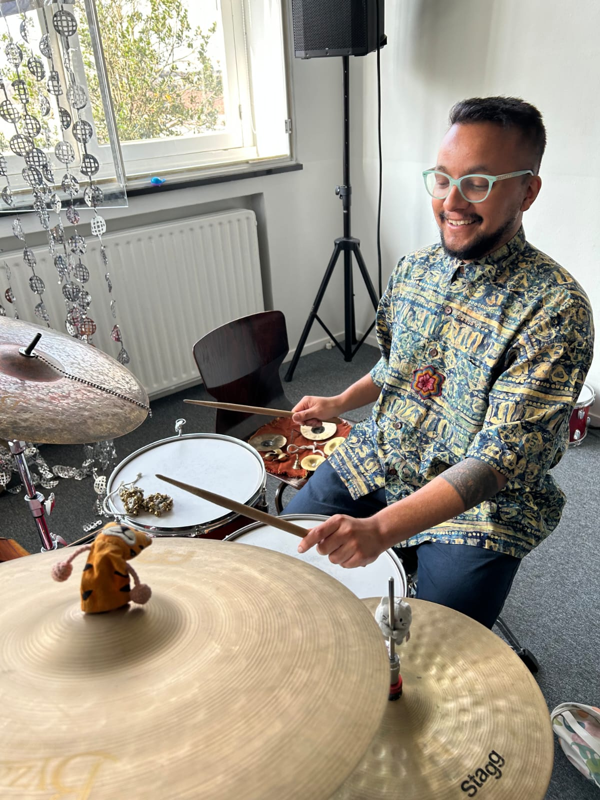
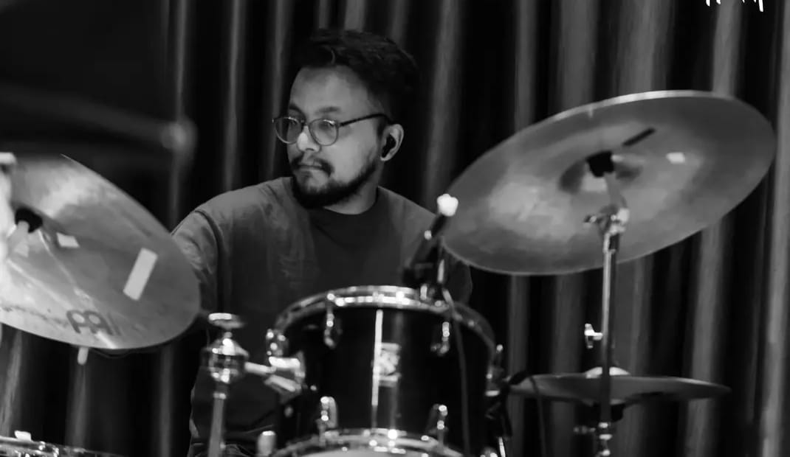

Learn Drums with Punku 🥁

Hiiiii.... So, you are curious about the drums. Well, you've just scanned the right QR code. HAHAHA... It seems like such a fun instrument and after playing it for many years I can tell you that it is even more fun than it looks.
Well, I'm Punku, musician/drummer from Nepal currently based in Maastricht. I have always been fascinated by music and drums. The endless exploration of sounds and rhythms has been quite fulfilling to me and I am here to share this joy with you.
You want to become a professional drummer? Wanna play for fun (because yes, it is a lot of fun)? Wanna pick it up as a hobby? Wanna just try it? Whatever it is, I am here to help you become the musician you want.
In order to achieve this, I like to make sure the lessons have a good balance between fun personal musical challenges and the various techniques (and bits of theory if needed) that will help you enjoy the most your time behind the drums.
About the Lessons:
The lessons can take place either at the school where I am studying (Conservatorium Maastricht) or your house, or we can even alternate! That way you get used to playing different drums (more drums = more fun). Also, it is possible to have online lessons. And if you still don't have your instrument that is not a problem, music always finds its way!
The lessons can be taught in English, Hindi or Nepali (might throw off some random Dutch words).
The duration of a lesson can range from 30 mins - 18 euros, 45 mins - 22 euros or 60 mins - 30 euros. There will be 1 lesson/week (can be more if needed).
I also believe that music education should be accessible and affordable to everyone. So, if you really want to learn the instrument (doesn't matter for what purpose) but don't have enough funds for it or are a struggling student (like me), we can also negotiate the prices (for people who need it) or even do classes in pairs with a buddy.
About me:
Currently I am studying Jazz Drums at the Conservatorium Maastricht where I was offered NI-ZUYD Excellence Scholarship. Before moving to the Netherlands, I studied 2 years jazz diploma from Kathmandu Jazz Conservatory and was immediately offered to teach in the same school. Besides, I was also teaching school kids in Premier International IB Continuum School, Nepal and also taking private students. Apart from teaching, I also have gained handful of experience playing with people from different parts of the world like the UK, Chile, Germany, Brazil, Spain, etc. and performed all over Nepal and also outside Nepal like Dubai, Thailand, Abu Dhabi and now the Netherlands.
If you want to know anything else from me, feel free to WhatsApp me at +31617248547. I'll do my best to be able to help you!
Also, if you're interested to see my musical journey, I 'sometimes' post videos in my -
Instagram: _punku | YouTube: Punku Channel

Drumles met Punku 🥁
Hiiiii.... Dus je bent benieuwd naar de drums. Nou, je hebt de juiste QR-code gescand. HAHAHA... Het lijkt zo'n leuk instrument en na vele jaren spelen kan ik je vertellen dat het nog leuker is dan het eruit ziet.
Nou, ik ben Punku, muzikant/drummer uit Nepal en momenteel gevestigd in Maastricht. Ik ben altijd gefascineerd geweest door muziek en drums. De eindeloze verkenning van klanken en ritmes geeft me veel voldoening en ik ben hier om deze vreugde met jou te delen.
Wil je een professionele drummer worden? Wil je voor je plezier spelen (want ja, het is heel erg leuk)? Wil je het als hobby oppakken? Wil je het gewoon eens proberen? Wat het ook is, ik ben hier om je te helpen de muzikant te worden die je wilt zijn.
Om dit te bereiken, zorg ik ervoor dat de lessen een goede balans hebben tussen leuke persoonlijke muzikale uitdagingen en de verschillende technieken (en een beetje theorie indien nodig) die je helpen om optimaal te genieten van je tijd achter de drums.
Over de Lessen:
De lessen kunnen plaatsvinden op de school waar ik studeer (Conservatorium Maastricht), bij jou thuis, of we kunnen afwisselen! Op die manier wen je aan het spelen op verschillende drums (meer drums = meer plezier). Ook is het mogelijk om online lessen te volgen. En als je nog geen eigen instrument hebt, is dat geen probleem: muziek vindt altijd wel een weg!
De lessen kunnen worden gegeven in het Engels, Hindi of Nepalees (ik kan er wat willekeurige Nederlandse woorden doorheen gooien).
De duur van een les kan variëren van 30 min - 18 euro, 45 min - 22 euro of 60 min - 30 euro. Er is 1 les per week (meer is mogelijk indien nodig).
Ik vind ook dat muziekonderwijs voor iedereen toegankelijk en betaalbaar moet zijn. Dus als je het instrument echt wilt leren (het maakt niet uit voor welk doel) maar je hebt niet genoeg geld of je bent een ploeterende student (net als ik), dan kunnen we ook over de prijzen onderhandelen (voor mensen die het nodig hebben) of zelfs lessen in tweetallen doen met een maatje.
Over mij:
Momenteel studeer ik Jazz Drums aan het Conservatorium Maastricht, waar ik een NI-ZUYD Excellence Scholarship aangeboden kreeg. Voordat ik naar Nederland verhuisde, volgde ik een 2-jarige jazzopleiding aan het Kathmandu Jazz Conservatory en kreeg ik onmiddellijk een baan aangeboden om les te geven op dezelfde school. Daarnaast gaf ik les aan schoolkinderen op de Premier International IB Continuum School in Nepal en gaf ik privéles. Naast het lesgeven heb ik ook de nodige ervaring opgedaan door te spelen met mensen uit verschillende delen van de wereld, zoals het VK, Chili, Duitsland, Brazilië, Spanje, enz. Ik heb door heel Nepal opgetreden en ook daarbuiten, zoals in Dubai, Thailand, Abu Dhabi en nu in Nederland.
Als je nog iets van me wilt weten, stuur me dan gerust een WhatsApp-bericht op +31617248547. Ik zal mijn best doen om je te helpen!
Ook als je geïnteresseerd bent om mijn muzikale reis te zien, post ik 'soms' video's op mijn -
Instagram: _punku | YouTube: Punku Channel